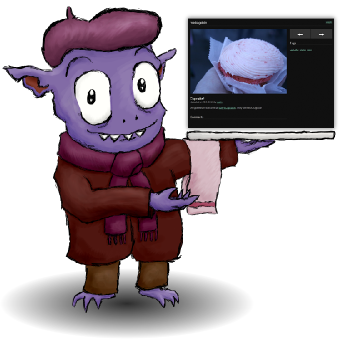

第103期：開源並嵌入CC授權選項的多媒體分享平台 - MediaGoblin
 |
第 103 期 2014-11-07 出刊
這是由台灣創用 CC 計畫出版的電子報，創用 CC，是 Creative Commons 的中文名稱，希望透過「保留部分權利」的彈性授權，讓創作得以更加流通。「網誌選輯」選出相關網誌 (Blog) 的最新文章，「CC 專題」提供創用 CC 專題報導。
本期專文由台灣創用CC 計畫技術管理王家薰所撰寫。MediaGoblin 是一套可由使用者自行架設的多媒體分享平台，使用者自行架設專案平台之後，能於其上存放照片、影像、音訊、文件，甚至是 3D 設計的 stl 檔案格式，並提供完整的創用CC 授權及其他公眾授權方式的設置選項。由於其開放源碼之故，使用者可以查看軟體本身的程式源碼，只要具有該領域的軟體撰寫能力，後續便可以依己意自由地修改及客製化想要的功能，非常適合推薦給具備基礎 Linux 系統操作知識，且對多媒體分享平台有自主化。
CC 網誌選輯
12/12 鬥陣來嘻嘻趴踢周文茵 /文12/12週五夜， 一群支持自由文化的音樂人，相約在河岸流言，打算舉辦場久違的CC party。是的，這是場售票活動。創用CC授權的提出，本來就不排斥商業行為，它推展的是自由文化，而不是免費文化。歡迎大家線上預購，鬥陣來參加這場嘻嘻趴踢。 線上預購：http://tickets.books.com.tw/progshow/03050001178129 |
一起來做動態圖（GIF IT UP 全球徵件）周文茵 /編譯什麼是動態圖，就是用俗稱的GIF檔交疊，讓圖像產生動態效果。 GIF IT UP是由The Digital Public Library of America和DigitalNZ聯合舉辦的全球徵件活動。這個公眾領域的慶祝活動，已於本週一正式起跑！本活動共為期六週的徵件時間（10/13-12/1），希望藉此找到活用公眾領域或開放授權素材的精彩作品。獲獎者可以將自己具特色的作品，放置於Public Domain Review 和 Smithsonian.com！很誘人吧^ ^ |
反思著作權－資訊公民的微革命：創用CC影展座談會後報導李佳樺 /文創用CC是一種信念。」音樂創作人林強在《反思著作權－資訊公民的微革命》影展座談會上的分享。 由中研院資創中心「台灣創用CC計畫」所策劃的十月份大學CC影展座談會，14日、21日、23日分別於政治大學、台灣大學及東吳大學舉行。每場影展除播放紀錄片The Internet’s Own Boy: The Story of Aaron Swartz（以下稱為《網路之子》），也邀請不同領域的講者分享帶領觀眾探討公眾授權及自由文化議題。 |
協力工坊--活動回顧報導宮薏婷 /文今年台灣創用CC計畫著力於影音創作領域的推廣，展開一系列的活動。除了創用CC影展座談會、線上影展特別企劃，另外，在10月18日及19日的週末下午， 分別舉行了「拼貼電影──當紙膠帶遇見電影」及「紀錄片《網路之子》協力翻譯工坊」，期待透過創作活動和協力翻譯，帶大家體會創用CC的自由文化精神，以 及它代表的「混搭、分享、再利用」概念。 10 月 18 日我們榮幸邀請到拼貼藝術家吳芊頤老師，現場為大家演繹示範如何利用紙膠帶和色紙的顏色色塊堆疊及視覺手法，對照原圖，拼貼出一幅唯妙唯肖又有個人創意的再創作作品。 |
CC 專題 :開源並嵌入CC授權選項的多媒體分享平台 - MediaGoblin
王家薰 / 文
近年在數位化浪潮下，使用者已經習慣透過數位相簿系統，來儲存與分類自己的影音和照片，而聯網分享更是線上建立這些相簿的主要目的。而最普遍的這類服務，一般都會聯想到用 YouTube、Flickr 等受大眾喜愛的多媒體服務平台。但，畢竟這些平台是基於商業利益來提供服務，在其營運利益的思維下，迭有使用上限制的地方，例如容量上的限制，或是圖片授權上選項的限制，也就是說，這些平台的使用模式，沒有辦法讓使用者有太多客製化調整的空間。因此，在自由開源軟體社群中，漸漸有一股聲音，討論是否有其他的多媒體分享軟體，能提供給想要以創用CC 授權條款 (Creative Commons License)，或其他公眾授權條款釋出素材的組織或個人來使用。因應這樣的需求，台灣創用CC 計畫評比分析了相關套件，最後選擇了以開源授權方式進行協作的多媒體分享平台－Mediagoblin 為基準，並與其核心開發團隊合作調校了一些功能，希望能幫助更多人，能善用這套軟體，來釋出創用CC 或歸於公眾領域 (Public Domain) 的素材，並進一步活化公眾共享的創作世界。
什麼是 ＭediaGoblin ？
MediaGoblin 是一套可由使用者自行架設 (self-hosting) 的多媒體分享平台。您可以把它想像成是分散式的 Flickr，併入 YouTube 與 Sound Cloud 的功能。簡言之，使用者可以自行架設專案平台之後，於其上存放照片、影像、音訊、文件，甚至是 3D 設計的 stl 檔案格式，此種程度的全方位多媒體支援，與當前市售的其他軟體專案相較，可說頗為少見，並且，由於 MediaGoblin 為開放源碼軟體 (Free and Open Source Software)，使用 GNU AGPL-3.0 授權釋出，程式語言方面則是採用 Python 來撰寫，故使用者除了可以很輕易的取得它的程式源碼 (Source Code) 之外，若本身具有程式撰寫能力的話，亦可隨意的調整它的功能，客製出各項需求的模組！而對一般單純使用者來說，在程式應用上若有任何的問題，亦可於 MediaGoblin 的官方網站找到詳細的支援指南 (MediaGoblin wiki: https://wiki.mediagoblin.org/Main_Page)。可說，這樣豐富的應用資源，已經能夠滿足任何想要永續經營多媒體分享平台的必備條件，故以下，筆者將簡要的為讀者介紹，推薦使用 MediaGoblin 做為素材 (Material) 釋出平台的理由，以及如何簡單的將它架設起來進行運用！
為何選擇 MediaGoblin 呢？
- 該專案隸屬於 GNU Project 群體下，這表示它是一個具有發展潛質的開源軟體專案，不易發生專案日後無人維護的狀況。
- 由於其開放源碼之故，使用者可以查看軟體本身的程式源碼，只要具有該領域的軟體撰寫能力，後續便可以依己意自由地修改及客製化想要的功能。
- 對平台上的素材，提供完整的創用CC 授權及其他公眾授權方式的設置選項。
- 建置後設資料 (metadata) 的方式，與其他軟體相較頗為簡便與容易。
- 支援非常多的多媒體及文件檔案格式，如下表所列。
| Image | 'png', 'gif', 'jpg', 'jpeg', 'tiff' |
| Video | 'mp4', 'mov', 'webm', 'avi', '3gp', '3gpp', 'mkv', 'ogv', 'm4v' |
| ASCII | 'txt', 'asc', ‘info' |
| Other | PDF、Stl (3D model)、Audio |
那麼，若是使用者想要自行架設 MediaGoblin 的話，應該如何進行呢？為了協助大家讓安裝過程更簡易可親，降低自行架設及後續客製化的門檻，台灣創用CC 計畫在去年度 (2013) 開始，洽詢了 ＭediaGoblin 團隊的核心開發者，在共同討論與共工努力之後，協力改善了該專案的一些功能，包括：
- 懶人安裝包 (easy install)：透過安裝互動介面問與答的方式，讓安裝過程更簡便
- 批次上傳 (batch upload)：讓 MediaGoblin 能更穩定地批次上傳多筆圖檔，並包含圖檔的 Metadata 等內容描述，也可以在一個步驟的操作裡被更新。
- 簡易首頁設計 (feature management)：簡易的首頁設置，使用者可指定幾張上傳的圖片，作為首頁圖示，以達到首頁展示上更佳的視覺化效果。
(閱讀更多)
創用 CC 電子報於每個月的第一個星期五發刊，每期規劃不同的專題，並邀請相關領域的專家與行動者為電子報撰寫專題文章，藉此希望讓大家更加瞭解創用 CC 的理念，也份外歡迎您提供意見。我們的聯絡方式，請參考創用 CC 網站
對於本報內容有任何問題，歡迎來信 contact@creativecommons.org.tw